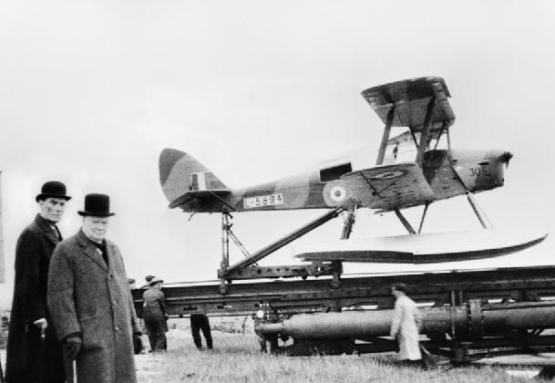
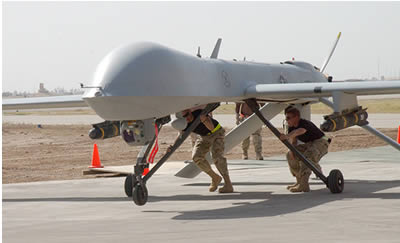

HISTORICAL TIMELINE
1917

สหรัฐอเมริกาพัฒนาอากาศยานไร้คนขับต้นแบบ เพื่อใช้เป็นอาวุธโจมตีอัตโนมัติในช่วงสงครามโลกครั้งที่ 1
1930s

เริ่มใช้ UAV เป็นเป้าฝึกยิง (Target Drone) สำหรับการฝึกทหารและระบบป้องกันภัยทางอากาศ
1960s

UAV ถูกนำมาใช้ในภารกิจข่าวกรองและลาดตระเวน ช่วงสงครามเย็น เพื่อลดความเสี่ยงต่อชีวิตนักบิน
1990s

พัฒนา UAV รุ่น Predator สามารถถ่ายทอดภาพแบบ Near Real-Time และติดตั้งอาวุธได้
ปัจจุบัน

UAV ถูกใช้อย่างแพร่หลายในภาคพลเรือน เช่น เกษตรกรรม การขนส่ง การสำรวจ และการกู้ภัย
AI HISTORICAL ANALYSIS
ANALYZING UAV EVOLUTION...
MILITARY → CIVIL TRANSITION
UAV ถูกพัฒนาจากเทคโนโลยีทางทหาร ก่อนจะถูกปรับใช้ในภาคพลเรือน ด้วยต้นทุนที่ลดลง และระบบ AI ที่ฉลาดขึ้น
PREDATOR UAV ERA

MQ-1 PREDATOR | ISR PLATFORM
IMAGE SOURCE:
ARCHIVAL UAV DATASET